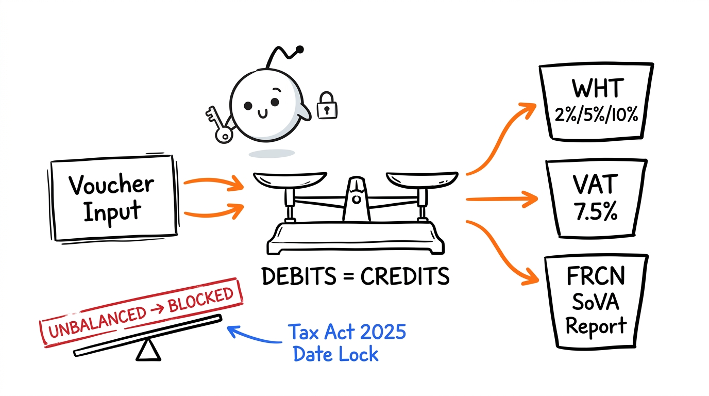
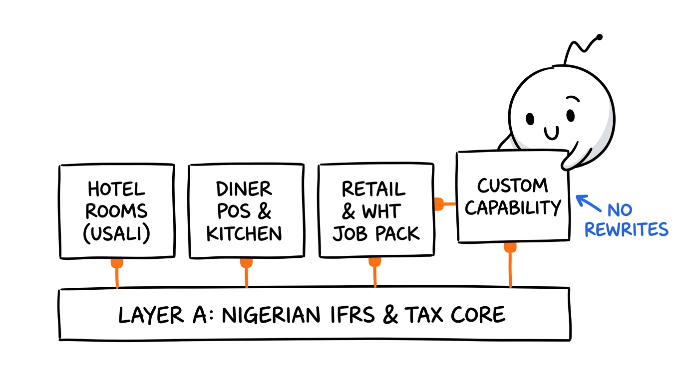

Grav Educational Article Illustrations (16:9 Whiteboard Explainers)
Saved under design/illustrations/ for non-technical onboarding and docs.


WCAG 2.2 Level AA Token Contrast Proofs
Loaded live from design/tokens/nairabooks.tokens.json and enforced in pytest.
Loading token swatches...
Zero-Sidebar Top-Capsule Workflow & Accessibility Audit
Visual inspection + interactive overhaul across all 8 Stitch screens (Setup -> Overview -> Books -> Entry -> Adjustments -> People & Stock -> PDF Reconcile -> Reports), backed by design/globals.css:
-
UX-OVERHAUL · RESOLVED — Replaced sidebar with unified single-line Floating Top Pill Navigation (
Overview | Books | People & Stock | Reconcile | Reports), covering all 10 Books, Master Records, PDF Bank Match, and Reports. -
A11Y-01 · RESOLVED — Keyboard skip links verified across all 8 Stitch HTML screens; paired with
.nb-skip-linkin globals. -
A11Y-02 · RESOLVED — Single semantic
<h1>headline and zero<aside>sidebars verified across all 8 screens. -
A11Y-04 · RESOLVED — Removed
fixed bottom-0overlays, fixed header wrapping withwhitespace-nowrap, and widened iconpr-9/pr-10input padding on Screens 4 & 5. -
A11Y-03 · PHASE 6 —
scope="col"/scope="row"active on Screens 5, 6, 8; bind explicit per-row cellaria-labelattributes inside live Next.js journal & directory grids.